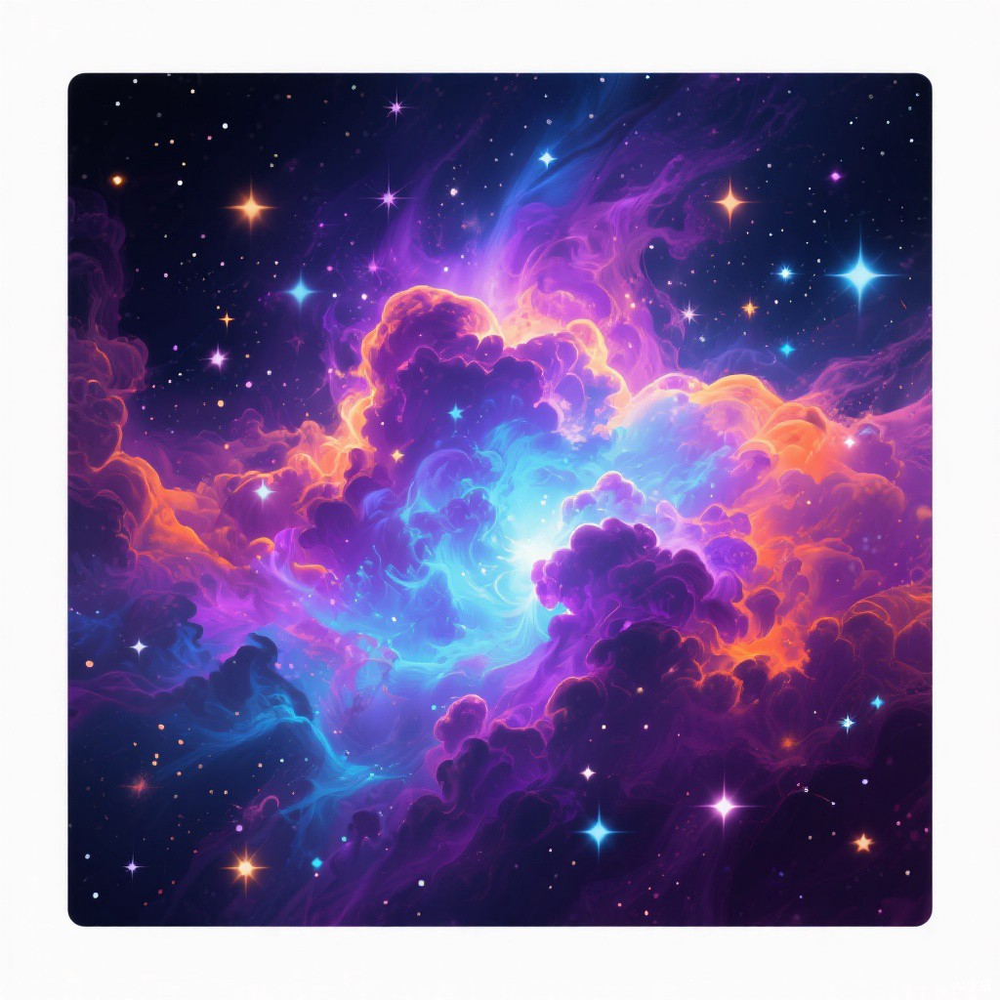
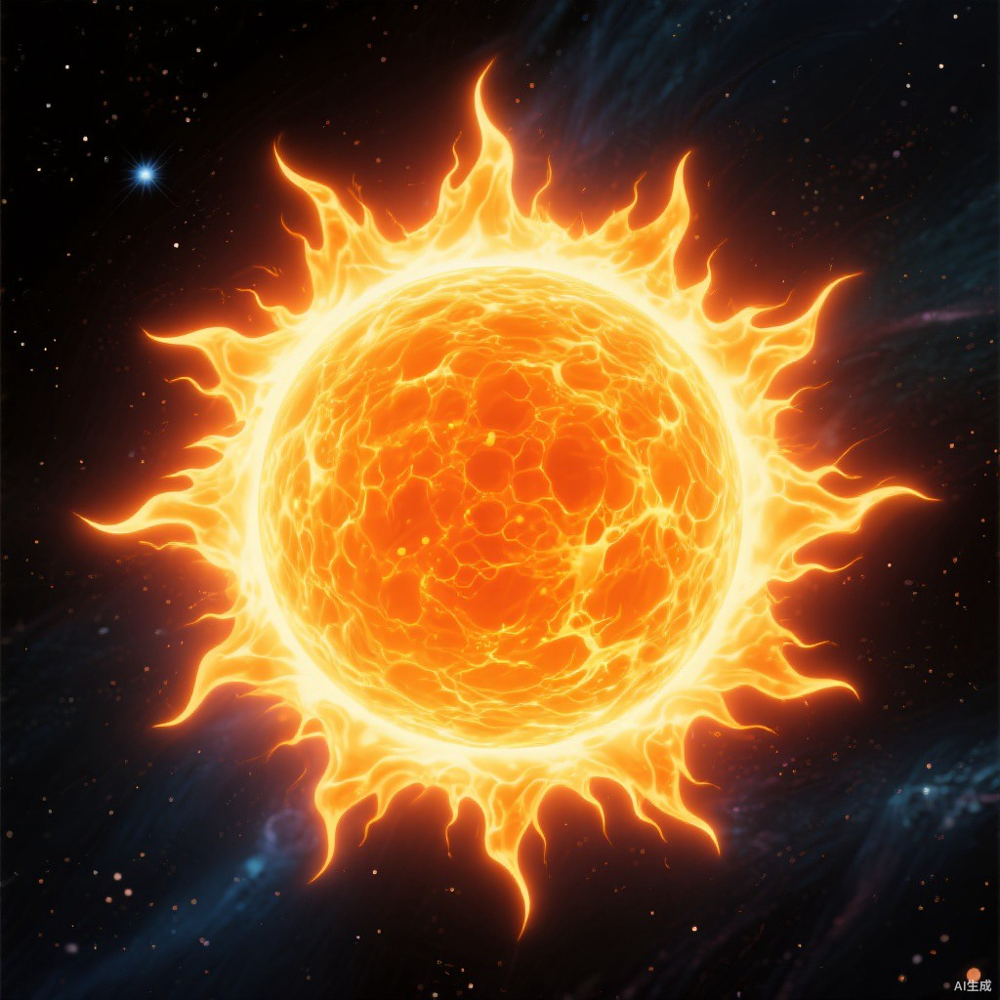
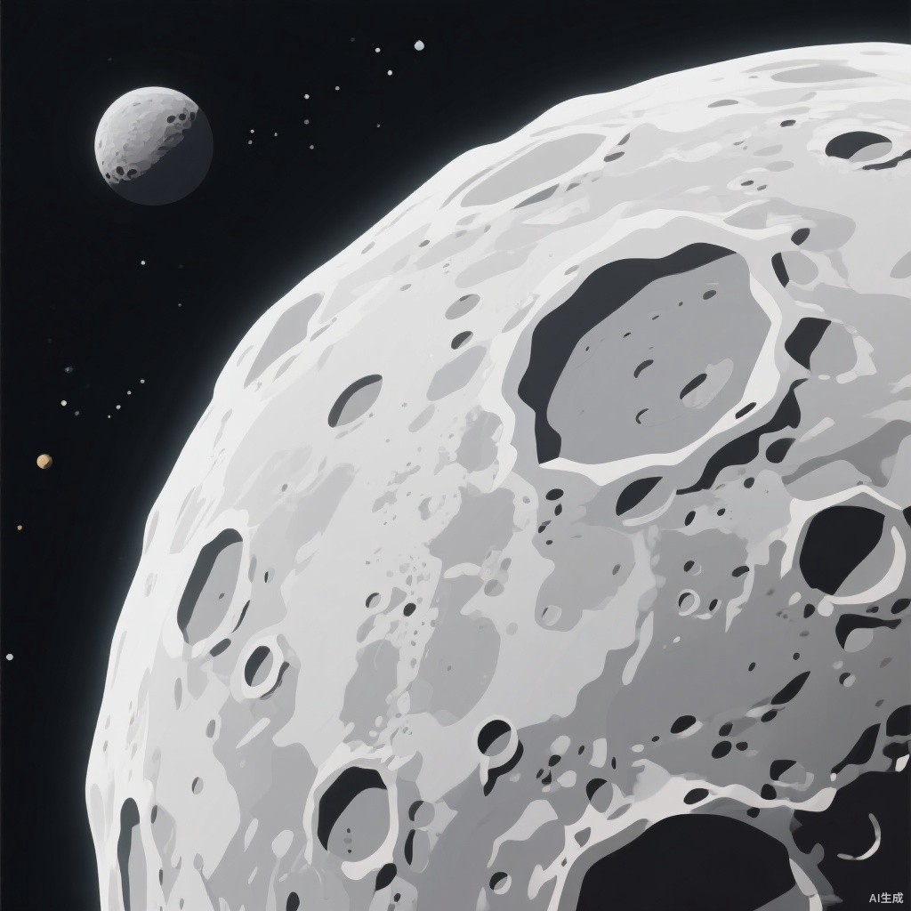
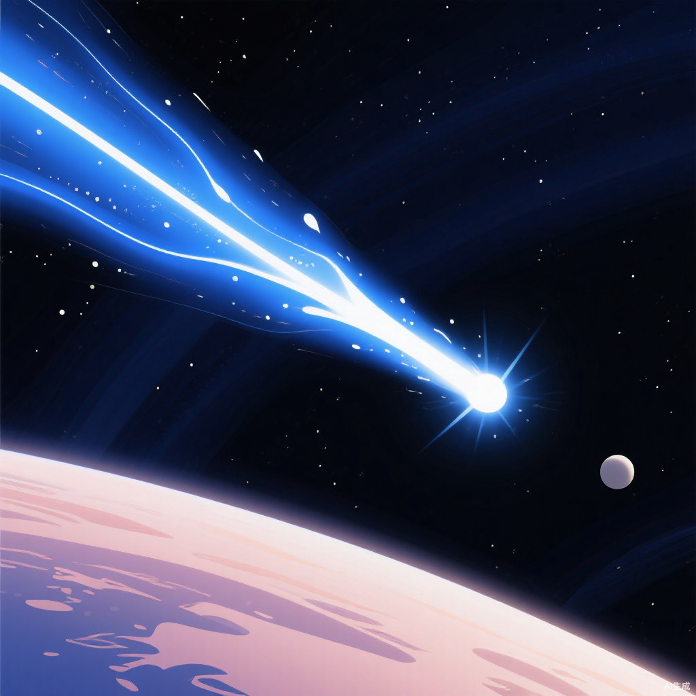
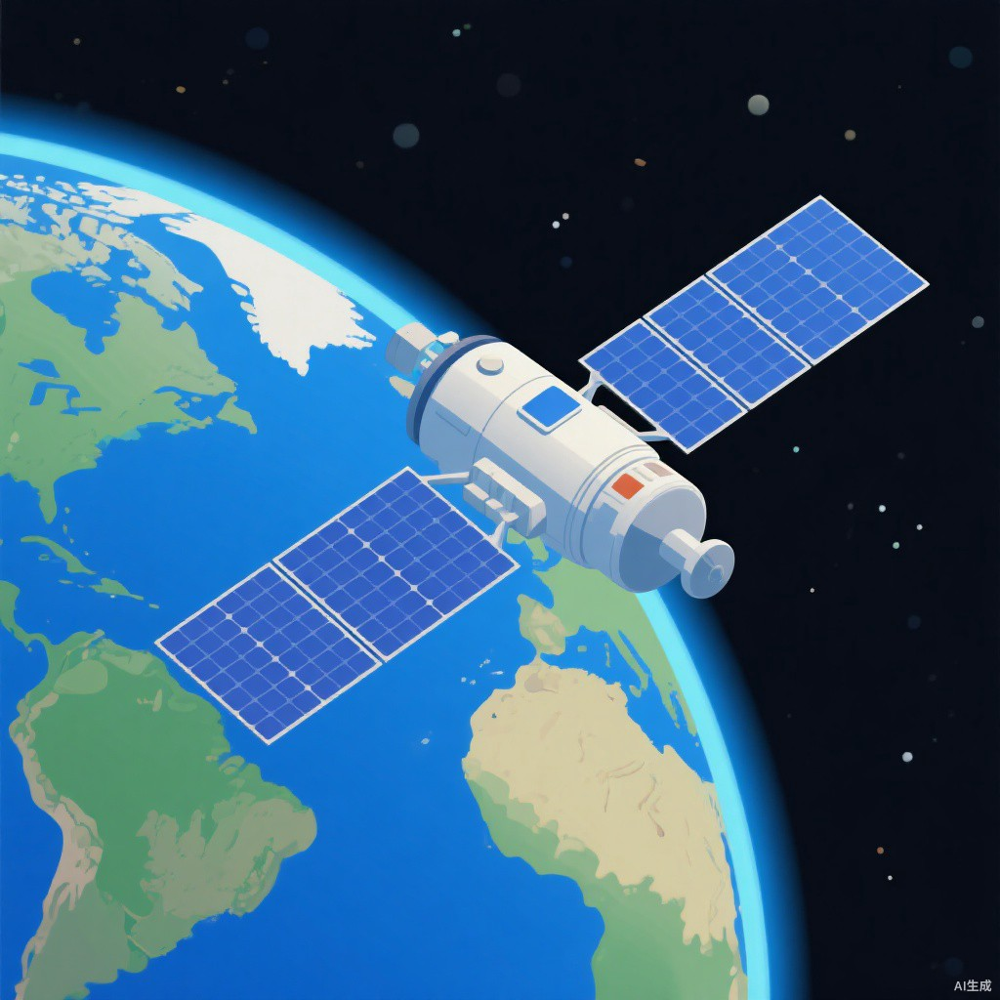

星云
组成气体（氢）和尘埃
特点
- 云雾状外表
- 密度非常小
- 体积和质量极其庞大，通常相当于上千个太阳
既是恒星的摇篮，也是恒星消亡后的物质残体。
第一章 第一节 · 高中必修一
认识我们所在的宇宙 —— 从地球出发，走向可观测宇宙
宇宙是空间与时间的统一体，无边无际、无始无终；它是物质性的、运动性的，约 137 亿年前起源于一次大爆炸。

四方上下曰宇，往古来今曰宙
宇宙是所有时间、空间和物质的总和
天体是宇宙中物质的存在形式。
按来源，天体可分为 自然天体 与 人造天体 两大类。

组成气体（氢）和尘埃
特点
既是恒星的摇篮，也是恒星消亡后的物质残体。

组成炽热气体（氢和氦）
特点
夜空中的"点点繁星"，大多是一颗颗恒星。

组成岩石、气体等（如八大行星）
特点
我们看到的行星亮光，其实是反射的太阳光。

组成岩石等（如月球）
特点
月球是地球唯一的天然卫星。

组成尘粒、固体岩石块
特点
流星体是天体；流星现象不是天体。

组成冰物质和尘埃（犹如"脏雪球"）
特点
彗尾总是背向太阳。

组成金属、电子元件等人工制造
特点
在太空中运行的人造卫星，属于人造天体。

组成金属、复合材料等人工制造
特点
在太空中运行的载人飞船，属于人造天体。
宇宙中天然形成并独立运行的天体
人类制造并发射进入太空运行的天体
判断一个物体是不是天体，看三条标准：是物质不是现象、位于地球大气层之外、是独立个体。跟随流星案例，一步一步验证这三条标准。
流星分步示意图 · 流星体进入大气层 → 摩擦燃烧形成流星现象 → 未燃尽落至地面成陨石
流星现象发生在大气层内，是现象不是天体；落到地面的陨石，也不是天体。
天体之间相互吸引、相互绕转，构成不同级别的天体系统。从大到小依次为：可观测宇宙 → 银河系 → 太阳系 → 地月系。
嵌套圆环图（由内到外）· 地月系 → 太阳系 → 银河系 → 可观测宇宙
（启用 JavaScript 后可点击层级逐级放大聚焦）
地月系：地球与月球相互吸引、相互绕转。同级别案例：火卫一绕火星运行（火星的卫星系统）太阳系：太阳与八大行星等天体相互绕转。同级别案例：半人马座 α 星系（比邻星所在的三合星系统）银河系：太阳系等上千亿个恒星系统组成的巨大星系。同级别案例：仙女座星系（河外星系）可观测宇宙：银河系等数千亿个星系构成的可观测范围。人类目前所能观测到的宇宙边界
太阳系以太阳为中心，八大行星沿近似共面的轨道绕日公转，公转方向一致（自西向东）。图中行星大小与距离非按比例。
八大行星分为类地行星、巨行星与远日行星三大类；它们的公转运动具有同向性、近圆性与共面性。
水星金星地球火星
固体表面，有金属内核
木星土星
气态，体积和质量很大
天王星海王星
气态（冰巨星），距日较远
八大行星绕日公转的方向都是自西向东。
行星绕日公转的轨道近似圆形。
行星轨道面几乎位于同一平面上。
地球的特殊性来自外部条件（太阳与宇宙环境）与自身条件（温度、大气、液态水）的共同作用。点击"下一步"逐条点亮因果链。
双分支因果链图
外部条件：太阳处于壮年 → 光照稳定；大小行星各行其道 → 宇宙环境安全
自身条件：日地距离适中 → 温度适宜；体积质量适中 → 形成适宜大气；水汽逸出 → 成云致雨汇聚成海
外部条件 + 自身条件共同作用 → 地球成为目前已知唯一适宜生命存在的星球。
收束全课知识结构。进入复习模式后，讲解文字会被隐藏，只保留结构图与练习，方便自主复习巩固。
知识结构树
宇宙 → 天体（自然天体：星云 / 恒星 / 行星 / 卫星 / 流星体 / 彗星；人造天体：人造卫星 / 载人飞船；判别三条件）与 天体系统（可观测宇宙 → 银河系 → 太阳系 → 地月系）
→ 太阳系（八大行星：类地 / 巨 / 远日；同向性 · 近圆性 · 共面性）
→ 地球的特殊性（外部条件 + 自身条件）